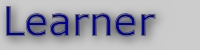

|  |

|
| Acquiring Common Knowledge from Web Volunteers | |
Research
Our research in this area focused on how to acquire common knowledge from volunteer contributors. A broad repository of common knowledge would allow knowledge systems to be less brittle. We investigated how to keep volunteers engaged in contributing, and developed techniques to validate the knowledge acquired. An interesting aspect of this work is to accommodate natural language statements, which are very easy for users to provide, while constraining them to be in a form that makes their processing possible. We also designed user interfaces that facilitated the collection of specific types of knowledge from users, including process knowledge and argumentation structures.
By 2006, our knowledge repository contained more than 700,000 statements concerning common knowledge, becoming one of the largest RDF documents on the web at the time.
Through the work on Learner, it became clear very quickly that there are very few universally agreed upon truths, and therefore accommodating different views is important. We are currently working on novel frameworks to create knowledge resources that incorporate alternative views within a community of contributors, see the Shortipedia project.